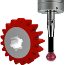

18.5. Probing options
 | Options for reading and displaying probing results. → → | 2024 |
The settings are stored in the applicationProbingProperties.xml file are not document-related.
Options
Caption: Select whether to display the actual probing results as Absolute values or if you want to show deviations, Delta values.
Layout mode: Select which method to use to avoid overlapping labels. If Default is selected, the labels are displayed evenly aligned. If Opposite is chosen, they are displayed alternately in the other direction. If Level of detail is selected, the label with the greater deviation from the target value is always displayed when two labels overlap.
Trend visualization mode: If By run is selected, runs are compared directly with each other. If Dimensioning is selected, the same attributes are compared directly next to each other.
Color - nominal: Enter a color for the target state.
Color - within the tolerance: Select a color for probing results within the tolerance.
Color - out of tolerance: Select a color for probing results outside the tolerance.
Point size: Select a size for the point that indicates the position of the target state and the probing result.
Line thickness: Select the width for displaying connecting lines.
Leader line tail length: Select the length of the leader line between the point of the probing result and the text of the label.
Dimension label offset: Enter the distance between the dimension line and the dimension.
Font: Select a font for the text of the label.
Text size: Select a size for the text of the label.